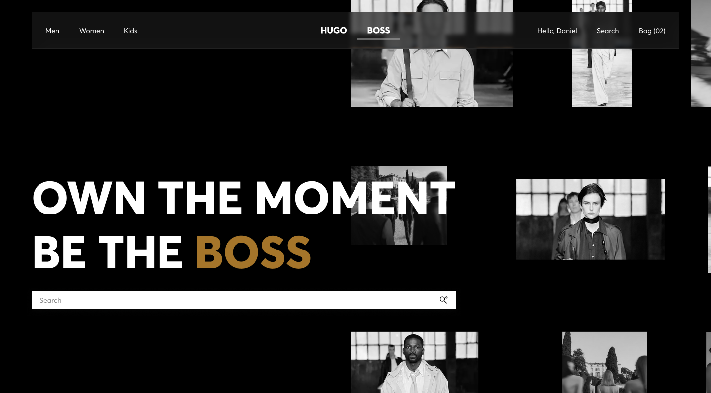
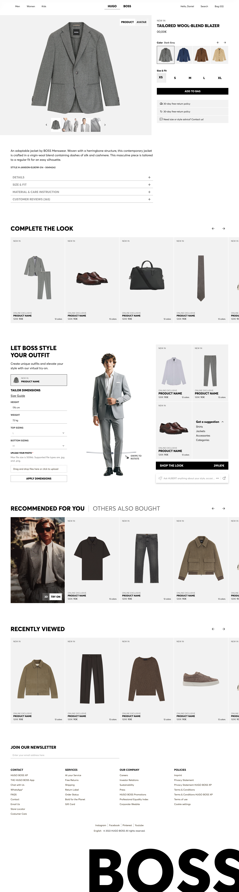
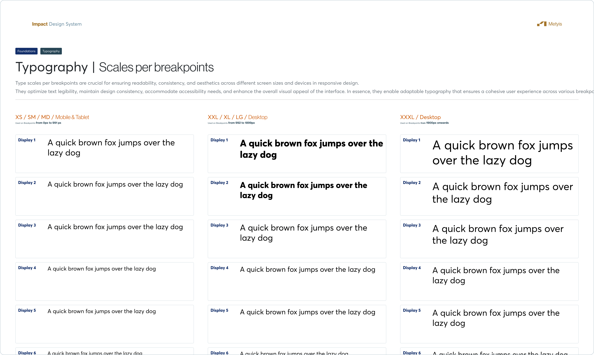

Hugo Boss
Full e-commerce platform redesign for HUGO BOSS — editorial homepage, virtual try-on, and the Impact Design System that unified it all.

01 / Context
HUGO BOSS operates two distinct brand lines — BOSS (premium tailoring, refined) and HUGO (contemporary, energetic) — under a single digital platform serving millions of customers across Europe and beyond. The brief was to unify the experience without flattening either brand identity, while significantly modernising how the platform performed commercially.
At the time, the site felt functional but not fashionable. Customers were discovering BOSS through editorial media and Instagram, then landing on a platform that didn't match the aspiration they'd just seen. The gap between brand and commerce was costing both conversion and brand equity.
02 / The Problem
Brand vs. function. The homepage was a standard carousel-and-grid layout — closer to a department store than a fashion house. Competitors like COS and Zara were investing in editorial-first experiences that created desire before showing product. BOSS's digital presence wasn't doing the same job as its runway campaigns, magazine placements, or stores.
Fit anxiety at high AOV. With average order values significantly above the fashion e-commerce norm, the cost of a wrong-size purchase was high enough to stop users converting at all. The existing product page provided a size guide — buried below the fold, static, and one-size-fits-all. It didn't address the confidence gap.
Design system debt. Years of parallel sprint work across brand, commerce, and editorial teams had created hundreds of one-off component variations. New features were expensive to ship and frequently inconsistent with existing patterns.
"Users didn't need a better shop.
They needed to feel something before they bought."
03 / Design Approach
Two threads ran through all design decisions: the platform needed to feel like a fashion brand first, an online shop second — and every new feature needed to be built on a foundation that could scale without accumulating more debt.
Editorial homepage
Replaced the standard carousel layout with a full-bleed dark canvas and a scattered editorial photo grid — echoing BOSS's runway and campaign aesthetics. The hero leads with brand voice ("OWN THE MOMENT / BE THE BOSS") and a search-first UX rather than a product push. Category entry points are surfaced as fashion photography, not filter tabs.
"Let Boss Style Your Outfit" — virtual try-on
Built a virtual outfit builder directly into the PDP as a primary tab (PRODUCT / AVATAR) — not a modal overlay or a secondary feature. Users can choose an avatar, enter tailor dimensions, upload a photo, and assemble and price a complete look. A "SHOP THE LOOK" CTA surfaces the full outfit total. The feature surfaced "Complete the Look" as a core commerce moment, not an afterthought.
PDP architecture
Restructured information hierarchy based on scroll depth data. Product name, price, colour, size, and "Add to Bag" are all resolved in the top half of the viewport. Styling (Complete the Look, virtual try-on) follows immediately after — before specs, materials, and reviews. This sequencing reflected how purchase decisions actually progressed.
Impact Design System
Built a unified token architecture covering typography at scale across three breakpoint tiers (XS/SM/MD mobile, XL/LG desktop, XXXL desktop), a full colour system for both BOSS and HUGO brand expressions, and 40+ core components. The system was designed to support both brand lines from a single source of truth without visual bleed between them.



04 / Outcomes
4
Core platform surfaces redesigned end-to-end — homepage, PLP, PDP, and cart
40+
Components in the Impact Design System
1st
Virtual try-on integrated as a primary PDP feature in BOSS's digital history
The Impact Design System unified BOSS and HUGO into a single component and token architecture — the first time both brand lines shared a design foundation. Typography, colour, and spacing were all tokenised across three breakpoint tiers. The system was adopted by all three product squads within six months of launch.
05 / Reflection
The virtual try-on feature was the most technically ambitious part of the project. In retrospect, involving engineering earlier in the avatar and dimension-input flows would have surfaced implementation constraints before they became design constraints mid-build.
The design system also revealed a tension between brand expressiveness and component rigidity. BOSS and HUGO have genuinely different visual languages — the system needed to be opinionated enough to create consistency but flexible enough not to flatten that difference. Getting that balance right took two additional rounds of token refinement after the first squad adoption.
Next project
Pepe Jeans — BELLO AI Platform